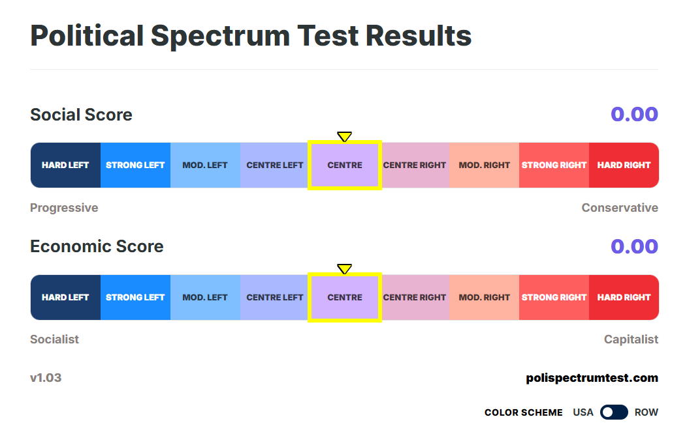

This is the political spectrum test, a political typology quiz where you answer your opinions on 50 propositions to see where you lie on the political spectrum on two axes: social and economic. The aim of this test is to be a good approximation of global political tensions and positions and allow for comparisons for people from different political factions and countries (explained in more detail in FAQ). All the questions are informed directly from the most common discourse topics amongst political candidates. The questions are designed to be thought-provoking and highly specific to gauge one's political leanings.
This test deliberately chooses to use the terms "left" and "right" on two key axes: social and economic. This is for the purpose of interpretability and communicability. It has become ingrained in modern discourse to refer to politicians being left or right and political movements to be described as "moving further to the left" or "moving further to the right." This test is designed to take the user responses to the questions and produce a result that is on the same scale, so that the user can easily compare themselves to other political figures (explained further in FAQ).

Example: How your results appear on the final spectrum.
General Positions of the Left & Right
The positions of left and right are informed by modern political discourse, but these are broad defenitions that are obviously not true for the left and right of every major country.
Generally, socially left politicians advocate for progressive reforms that seek equality social liberties for historically marginalized groups. Socially right politicians tend to favour traditionalism, emphasize national identity, and maintenance of the status quo. Economical right-wing politicians generally advocate for less government intervention and laissez-faire economic policies, while economically left-wing politicians tend to highlight market failures and propose interventions to correct them.
You can also navigate to the menu to see where your peers and major political figures would score on this test.